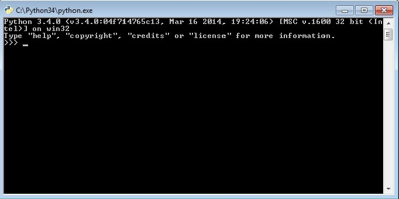

INSTALLER PYTHON !
L'installation de Python est un jeu d'enfant, aussi bien sous Windows que sous les systèmes Unix. Quel que soit votre système d'exploitation, vous devez vous rendre sur le site officiel de Python.
Si vous travaillez dans un environnement Linux ou Mac , bonne nouvelle Python déjà installé.
Sous Mac et Linux, Python est déjà installé. Par contre, vous allez devoir l'installer si vous tournez sous Windows. Revers de la médaille : sous Mac et Linux, il se peut que la version soit un peu ancienne. En ce cas, il vous faudra installer une version plus récente si vous voulez bénéficier des dernières fonctionnalités.
* Système: Python est également souvent utilisé par les admin système pour créer des tâches dites répétitives ou simplement de maintenance. D'ailleurs si vous voulez créer des applications java en codant en python, c'est possible grâce au projet Jython.
-
Rendez-vous sur le site de Python. En vous rendant à l'adresse python.org/downloads, vous allez pouvoir télécharger votre version de Python. Le site détectera que vous êtes sous Windowset la version que vous utilisez : il affichera alors l'installateur Windows approprié.
-
Cliquez sur Installer maintenant. Python s'installe alors avec tous ses paramètres par défaut, lesquels sont largement suffisants pour la plupart des utilisateurs. Si vous désirez désactiver certaines fonctions, modifier le répertoire d'installation ou encore installer le débogueur, cliquez sur Installation personnalisée, puis cochez ou décochez les cases en fonction de vos besoins.

-
Une fois l'installation terminée, il vous affiche cette fenetre.
-
Sous Linux
Lorsque vous l'avez installé sur votre système, Python a créé un lien vers l'interpréteur sous la forme python3.X (le X étant le numéro de la version installée). lancez un terminal:
Si, par exemple, vous avez installé Python 3.4, vous pouvez y accéder grâce à la commande :
-
Sous windows
Vous avez plusieurs façons d'accéder à la ligne de commande Python, la plus évidente consistant à passer par les menusDémarrer>Tous les programmes>Python 3.4>Python (Command Line). Si tout se passe bien, vous devriez obtenir une magnifique console (figure suivante). Il se peut que les informations affichées dans la vôtre ne soient pas les mêmes, mais ne vous en inquiétez pas. 